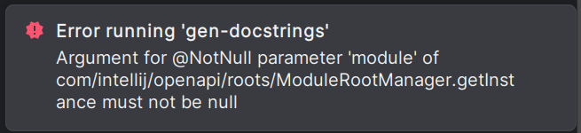

Troubleshooting
A - Prerequisite:
Run agilab.sh to install and then try to run your xxx-project. Each Agilab API call should be set with verbose mode >= 3. In particular, when debugging with a Dask worker, it will create a file (~/xxx-project_trace.txt) that shows what happened in during the worker build execution.
B - Pycharm Run/Debug configurations:
These scripts are provided to debug your app with the PyCharm IDE, which best matches Agilab troubleshooting.
runConfigurations/
install_agilab_enduser.xml
C - Exemple of Tests Sequence:
** zip-all gen**
TGenerate the zip of the whole agi project directory with .gitignore filtration. A agi.zip file should created at the root dir of your projectu
** test-agi-env test**
This will lunch unitary test for agi_env components and display their pytest results
** core test**
This will lunch all the unitary tests for agi_core components and display their pytest results
** app_script gen**
This will generate the script below
** <your app>-preinstall**
This will test the conversion of <your_code>_worker.py into <your_code>_worker.pyx to check if your code is transformable into Cython compilable source code. A file <your_code_worker.pyx> should appear in your wenv
** <your app>-postinstall test**
This will test the test your worker post_install.py.
** app-manager install**
This will install the venv in your fwk/apps/<your app>.
** app install**
This will install the venv in your apps/<your app> and in your <home>/wenv/<your worker>.
** <your app>_egg gen **
Generate your project egg file containing all the required files to compile the worker Cython library.
** <your app>_lib gen **
Generate your project lib file by compiling <your_code>_worker.pyx and add its dependencies into a Cython library.
** <your app> test**
This will test your app in a minimalistic way.
** <your app> run**
In the contexte of apps/<your app>/.venv it will run the log/AGI.<snippet> you have selected which should only be a distribute or a run one. Remark: use script “app install” to test your app install as it has to be run under fwk/core/.venv virtual environnement.
D - agilab_run_dev vs agilab_run_enduser vs lab_run:
1. agilab_run_dev and agilab_run_enduser
Main script to lunch agilab in mode dev or in mode enduser This will run streamlit module which will run AGILAB.py in run/debug mode
12. lab_run_test
Only for enabling lab_run.py debugging This will directly lunch run_lab.py in run/debug mode
E - macOS NFS server checklist:
Use this quick list when you need a shared dataset folder between Macs (for example, a cluster
controller exporting /Users/agi/data to another workstation). Replace 192.168.3.86 with
your server IP and adjust mount paths as needed. The default AGI_SHARE_DIR is
clustershare under $HOME; when unavailable AgiEnv falls back to AGI_LOCAL_SHARE
or $HOME/localshare. Ensure the chosen path exists and is writable.
is now managed with a nobody:nogroup ownership policy so every worker sees identical UID/GID
mapping—keep that in mind if you point exports somewhere else.
1. Exports and daemon health (server)
cat /etc/exports
# Expect to see the export, e.g.:
# /Users/agi/data -alldirs -mapall=-2:-2 127.0.0.1 192.168.3.0/24
sudo nfsd restart
showmount -e 192.168.3.86
# Expect: /Users/agi/data ... 192.168.3.0/24 (or your client IP)
rpcinfo -p 192.168.3.86
# Expect to see nfs on 2049/tcp and mountd on tcp (typically port ~850)
2. Directory permissions (server)
ls -ldn /Users/agi/data
# If you rely on -mapall=-2:-2, make the directory writable by nobody:nobody:
sudo chown -R nobody:nobody /Users/agi/data
# or grant an ACL if you cannot change ownership:
sudo chmod +a 'everyone allow read,write,delete,add_file,add_subdirectory,file_inherit,directory_inherit' /Users/agi/data
3. Can the client see the export?
Run this from the second Mac:
showmount -e 192.168.3.86
# Expect the same export list you saw on the server
4. Mount and verify (client)
sudo mkdir -p /Users/agi/clustershare
sudo mount -t nfs -o vers=3,tcp,resvport 192.168.3.86:/Users/agi/data /Users/agi/clustershare
mount | grep clustershare
# Expect one line, e.g.:
# 192.168.3.86:/Users/agi/data on /Users/agi/clustershare (nfs, ...)
ls -la /Users/agi/clustershare
# Should show the server directory contents
5. Read/write + UID mapping check (client)
echo "hello" | sudo tee /Users/agi/clustershare/.nfs_test >/dev/null
ls -ln /Users/agi/clustershare/.nfs_test
# With -mapall=-2:-2 you should see owner/group 4294967294:4294967294
sudo rm /Users/agi/clustershare/.nfs_test
6. Optional: autofs on the client
grep -n 'auto_nfs' /etc/auto_master
cat /etc/auto_nfs
# Expect a line such as:
# /Users/agi/clustershare -fstype=nfs,vers=3,tcp,resvport 192.168.3.86:/Users/agi/data
sudo automount -vc
ls -la /Users/agi/clustershare # triggers the automount
mount | grep clustershare # confirm a single NFS mount
Quick troubleshoot
Export missing on the client
showmount: fix/etc/exportson the server (allow the client IP or subnet), thensudo nfsd restart.Timeouts: from the client run
rpcinfo -p 192.168.3.86. If it hangs, temporarily disable the server firewall:sudo /usr/libexec/ApplicationFirewall/socketfilterfw --setglobalstate off # test, then restore: sudo /usr/libexec/ApplicationFirewall/socketfilterfw --setglobalstate on
Permission denied/ read-only: ensure the exported directory is writable by the mapped identity (nobodyor another service user).Double mounts in
mountoutput: unmount twice to clear stacked NFS layers, then remount or let autofs handle it:sudo umount /Users/agi/clustershare || true sudo umount /Users/agi/clustershare || true
Known Bugs
<install.sh> do not install your Run/Debug Configurations :
If your worker failed to install its <home>/wenv/<app>_worker/.venv pycharm/setup_pycharm will not generate your script
in that case you can run the pycharm configuration app install (local) that will prompt for your app path to debug
your app installation and when it is fix run uv run python pycharm/setup_pycharm.py
<install.sh> freeze:
When you run install.sh it may looks like it is freezed at some point.
Installing agi-cluster...
uv --preview-features extra-build-dependencies sync -p 3.xx.xx --dev
Using CPython 3.xx.xx
Creating virtual environment at: .venv
Resolved xxx packages in xxms
Building agi-cluster @ file:///Users/jpm/agilab/src/agilab/core/agi-cluster
- The sync keeps “freezing” because uv still has to build some heavy dependencies (most notably numba/llvmlite) from
source. Those wheels are only pre-built for a few Python versions; with 3.13 they do not exist yet, and even on 3.12 they can fall back to a full compile that takes many minutes before any log progress appears.
- Unfortunatly when NumPy/Numba falls back to compiling from source you won’t see messages until the compiler finishes, so it
looks like the run “hung”.
<UV> VIRTUAL_ENV Warning
while running uv into a project from another one: warning: VIRTUAL_ENV=.venv does not match the project environment path /Users/jpm/agilab/src/agilab/apps/mycode_project/.venv and will be ignored; use –active to target the active environment instead This is not a problem this because we dynamically change the venv. Just ignore it.
<UV> Sync Failed
While running a script you see a “missing module” message but your module is correctly installed in your venv. And when you try to reinstall it his can lead to re-installation failures due to circular dependencies that prevent proper package version resolution. This may arrived because your UV cache has been corrupted.
Solution:
Clean the UV cache by executing the following command:
uv cache clean
<DASK> Debug Issue
While debugging Dask on Python, you might encounter the following error:
TypeError: _patch_asyncio.<locals>.run() got an unexpected keyword argument 'loop_factory'
Workaround:
Disable python.debug.asyncio.repl in the PyCharm registry. To do this, go to Naviguate/Search Everywhere (<Shift>+<Ctrl|command>+A) to open the <Action> tab then search for registry.

<PYCHARM> Run/Debug Configuration is Broken
For instance, select your “Run/Debug configuration” (e.g., <gen-docstings>) and then press [Run]. The following message appears when you try to [debug] <gen-docstings>:
Argument for @NotNull parameter ‘module’ of com/intellij/openapi/roots/ModuleRootManager.getInstance must not be null
{kind=link}
Solution:
This is because your Pycharm script is pointing an a venv but the project containing this venv is not attach to your current project. So you have to attach this project to your currrent project for enabling your script to be runnable again.
<PYCHARM> Can’t open your project
After an install of agilab when you select your project to open but it failed. This might come from pycharm/setup-pycharm.sh that have corrupted your pycharm settings
Solution (macOS):
# remove caches and index rm -rf ~/Library/Caches/JetBrains/PyCharm*
# remove locks / and broken files find ~/Library/ApplicationSupport/JetBrains -maxdepth 2 -type f -name ‘.lock’ -delete rm -f ~/Library/ApplicationSupport/JetBrains/PyCharm/options/recentProjects.xml rm -f ~/Library/ApplicationSupport/JetBrains/PyCharm*/options/other.xml.___jb_tmp___ rm -f ~/Library/ApplicationSupport/JetBrains/PyCharm*/options/jdk.table.xml rm -f ~/Library/ApplicationSupport/JetBrains/PyCharm*/options/jdk.table.xml.___jb_tmp___
Failed to read pydantic metadata
If the installer emits Failed to read metadata from installed package pydantic==2.12.3:
Clear the offending wheel:
uv cache clean pydantic
Reinstall
pydanticin each affected project:cd src\agilab\core\agi-env uv pip install --no-cache-dir --force-reinstall pydantic==2.12.3 cd ..\agi-node uv pip install --no-cache-dir --force-reinstall pydantic==2.12.3 cd ..\agi-cluster uv pip install --no-cache-dir --force-reinstall pydantic==2.12.3
Rerun the installer.
The METADATA files are regenerated and the warning disappears.